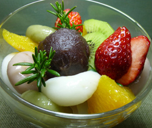

３色白玉あんみつ
- 調理時間：30 分
- （一人当たり）
- カロリー：221kcal
- たんぱく質：3.7g
- 脂質：0.4g
- 塩分：0g

＜２人分＞
Ａ
- ・白玉粉
- 15g
- ・いちごジャム
- 大さじ1
- Ｂ
- ・白玉粉
- 15g
- ・青汁の粉
- 少々
- Ｃ
- ・白玉粉
- 15g
【いちご寒天】
- 粉寒天
- 2g
- いちごジャム
- 大さじ1
- 水
- 250ml
- いちご
- 4個
- ネーブル
- 1/2個
- キウイフルーツ
- 1個
- あんこ（市販）
- 大さじ2
- 黒蜜
- 適量

- ＜３色白玉をつくる＞
A、B、C、それぞれの材料を別々のボウルに入れて、水を加えて耳たぶのかたさにこね、お団子状にまるめる。 - 沸騰したお湯の中に①をいれてゆでる。ゆであがったら冷水に入れて冷やす。
- ＜いちご寒天をつくる。＞
小鍋に水、いちごジャム、寒天を加えて火にかけ、沸騰させる。
寒天がしっかり溶けたら、火を止める。ザルで濾し、型に流しいれ、あら熱がとれたら冷蔵庫で冷やしかためる。 - いちご、ネーブル、キウイフルーツは食べやすい大きさに切る。
③のいちご寒天も２cm角にきる。 - 器に白玉だんご、いちご寒天、くだもの、あんこを盛り付ける。お好みで黒蜜をかける。
３色白玉あんみつ
桜の開花まであと少し。別れと出会いに心弾む季節がやってきます。ところが、新たな出会いや環境の変化が苦手な方にとってはストレスも溜め込みやすい季節となります。人はストレス過剰になると体内でたくさんのビタミンＣ を消耗します。そこで、ストレスに立ち向かうために必要なビタミンＣ を十分に補給しておきましょう。
果物の中でもいちごにはビタミンＣが多く、春は出回り期。皮をむく手間もありませんし、パクパク食べてほしい果物です。
加熱していない生のフルーツなら、酵素も一緒にとれて一石二鳥。その他、ビタミンＣ は、鉄分の吸収を助ける役割もあります。鉄分が不足すると疲れやすく、集中力が低下します。ビタミンＣ を摂ることで鉄分の吸収を助け、ストレスにも影響を受けない強靭なメンタルを手に入れましょう。